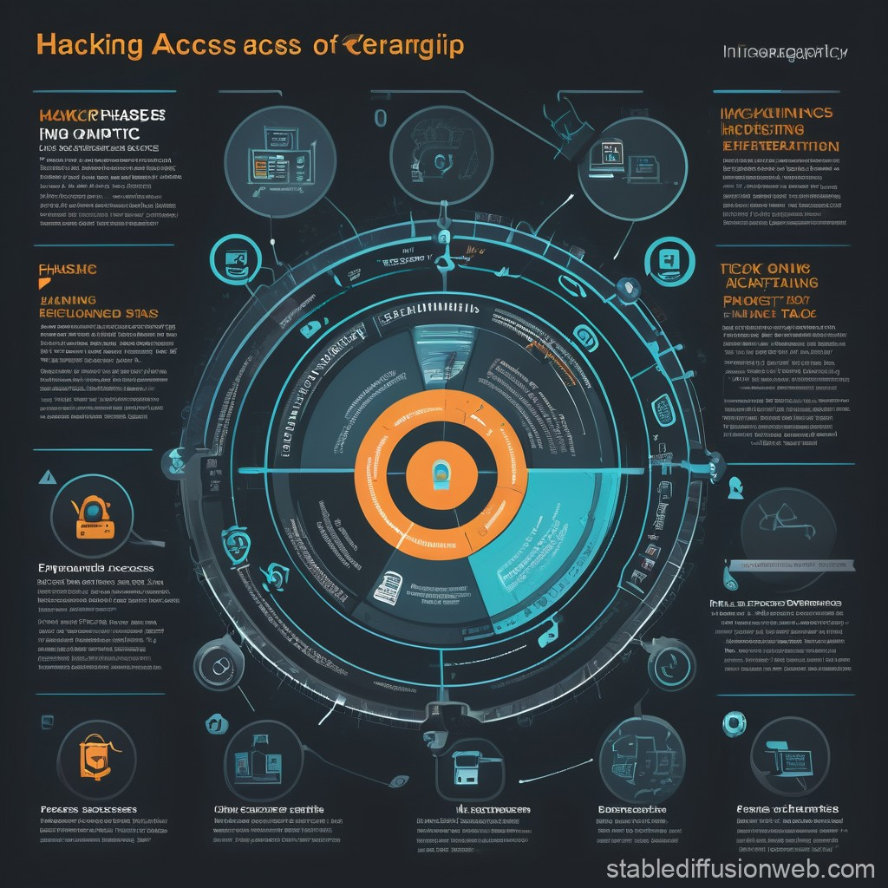

Ethical hacking refers to the process of intentionally probing a system for vulnerabilities in a
controlled, authorized manner to identify weaknesses before malicious hackers can exploit
them. The main goal is securing systems, not compromising them.
Why Ethical Hacking is Important ?
Identify vulnerabilities: Protect systems from real hackers.
Prevent data breaches: Guard sensitive information.
Strengthen defences: Ensure that the system is fortified against attacks.
The Phases of Hacking
Ethical hacking follows a systematic process, known as the ethical hacking lifecycle. Here
are the main stages: 
1. Reconnaissance:
The hacker collects information about the target system.
This can be active (direct interaction with the system) or passive (gathering info from
public sources).
2. Scanning:
This phase involves identifying live hosts, open ports, and services running on the
system.
Tools: nmap, netdiscover.
3. Enumeration:
Extracting detailed information such as user accounts, shares, and services.
Tools: enum4linux, snmp-check.
4. Gaining Access:
The hacker attempts to exploit the discovered vulnerabilities to gain access to the
system.
Tools: Metasploit, Hydra.
5. Maintaining Access:
Once access is gained, the hacker may create a backdoor for future entry.
Tools: Netcat, Metasploit.
6. Covering Tracks:
The final phase is about erasing logs and traces to avoid detection.
Tools: Clearev, Rootkit Hunter
For Real-World Hackers:
The Cyber Kill Chain and MITRE ATT&CK Frameworks
As a hacker operating in the real world, you know that cybersecurity is more than just tools
and commands—it’s about strategy, precision, and understanding your target. Two critical
frameworks that every hacker should master are the Cyber Kill Chain and MITRE ATT&CK.
These frameworks break down the art and science of hacking into structured phases, giving
you the edge in understanding and emulating attack scenarios.
The Cyber Kill Chain:
Developed by Lockheed Martin, the Cyber Kill Chain is a seven-step framework that
outlines the lifecycle of a cyberattack, from preparation to execution. Here's what each
phase means to a hacker:
1. Reconnaissance
o Goal: Gather intelligence about your target. o Real-World Use: Use OSINT tools, scan networks, and map out vulnerabilities. o Tools: Nmap, Shodan, Maltego.
2. Weaponization
o Goal: Craft your exploit. Combine malware with a delivery method. o Real-World Use: Write custom payloads or tweak existing ones to evade
detection. o Tools: msfvenom, Veil, Python.
3. Delivery
o Goal: Deliver the weapon to the target via phishing, USB drops, or direct access. o Real-World Use: Choose the most effective vector based on reconnaissance. o Tools: Social engineering, email spoofing, PowerShell scripts.
4. Exploitation
o Goal: Trigger the payload to exploit the vulnerability. o Real-World Use: Execute exploits with precision to gain initial access. o Tools: Metasploit, ExploitDB scripts.
5. Installation
o Goal: Install backdoors or malware to maintain access. o Real-World Use: Drop persistent shells or RATs for ongoing control. o Tools: Cobalt Strike, Empire, Netcat.
6. Command & Control (C2)
o Goal: Establish a secure communication channel. o Real-World Use: Use stealthy techniques to avoid detection while controlling
compromised systems. o Tools: C2 frameworks like Sliver, Covenant.
7. Actions on Objectives
o Goal: Achieve your ultimate objective, whether it’s data exfiltration, sabotage,
or lateral movement. o Real-World Use: Execute final operations while maintaining stealth. o Tools: Mimikatz, BloodHound, Rclone.